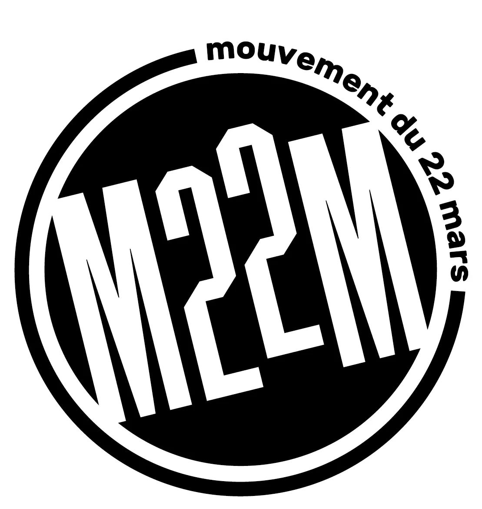
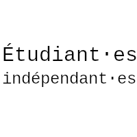
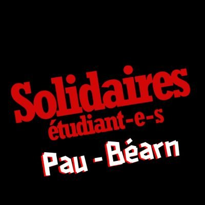
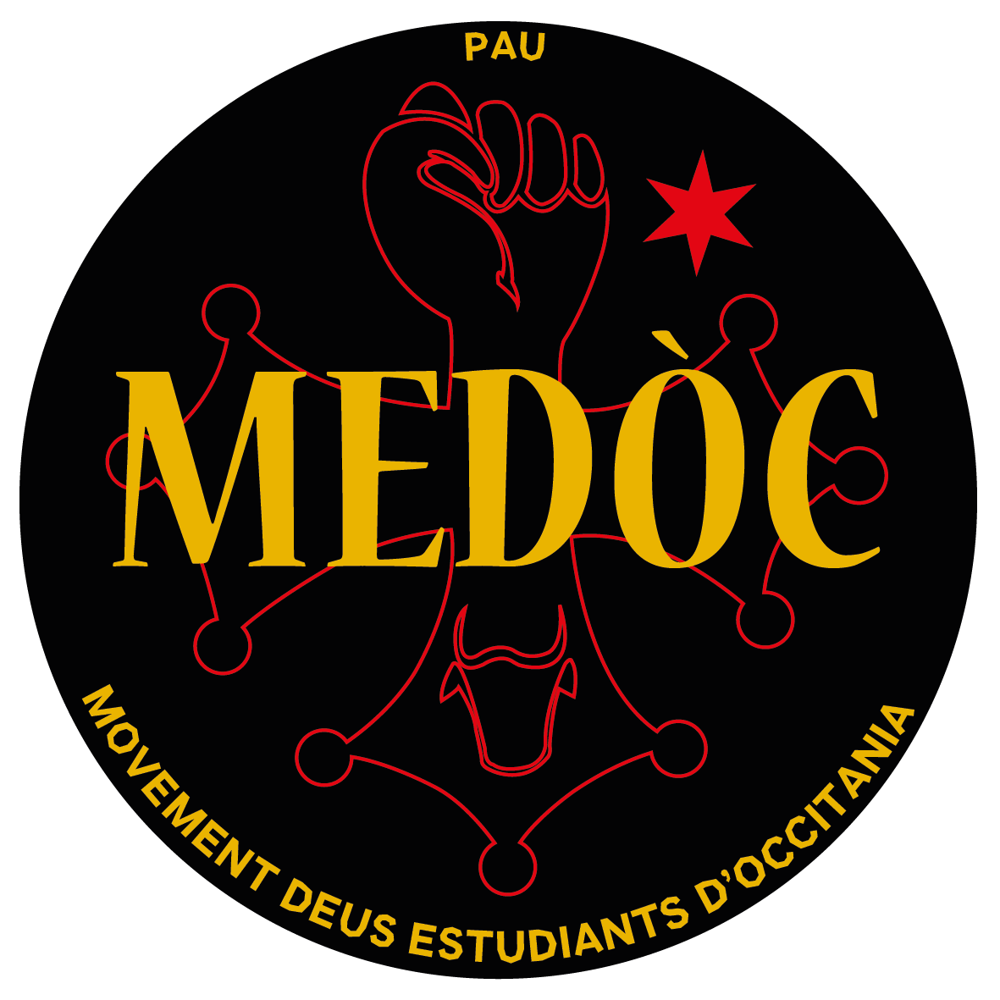
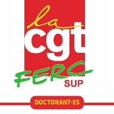
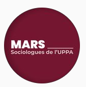
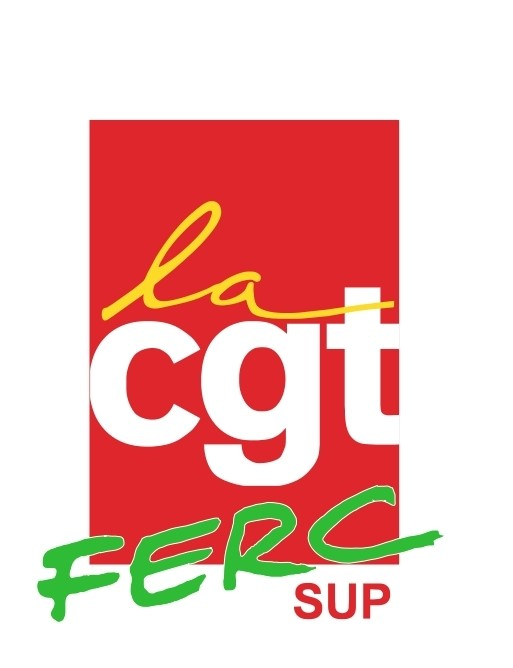

Pour une université gratuite, populaire, critique, émancipatrice, de proximité, ouverte à toutes et tous
Profession de foi
📚 Axe 1 : Démocratisation et accessibilité au savoir
💶 Axe 2 : Lutte contre la précarité
👥 Axe 3 : Pour un service public de qualité
Axe 4 : 🎓 Université de proximité
Axe 5 : 🗣️ Diversité culturelle et linguistique
Axe 6 : ✊ Université en lutte contre les dominations
Axe 7 : 🌱 Université écologique et sans conservateur
Axe 8 : 🥼 Pour une recherche sans précarité !
Liste composée par :




Liste soutenue par :

